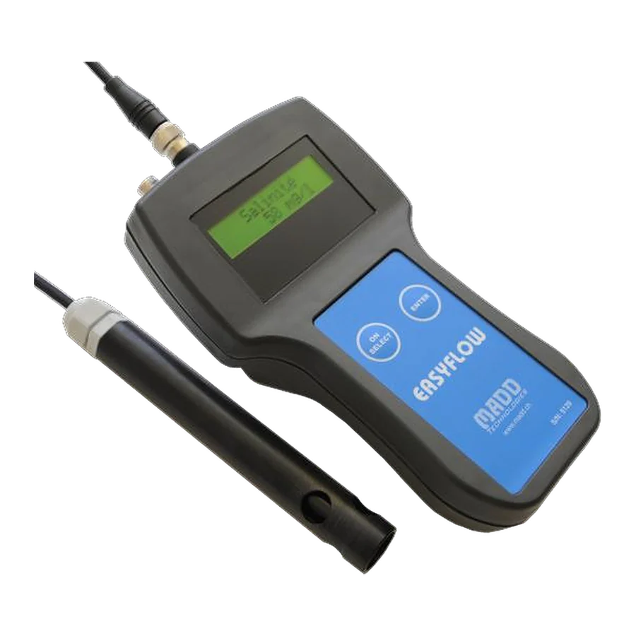
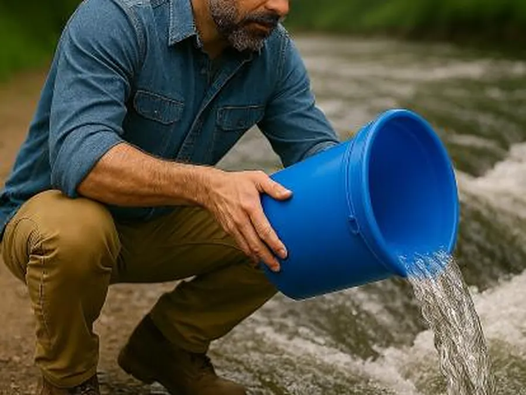

Débitmètres · Mesure ponctuelle
EASYFLOWDébitmètre de jaugeage par traçage au sel
Le débit d’un cours d’eau turbulent en quelques minutes, sans relevé de profil : on injecte du sel de cuisine en amont, la sonde enregistre le passage du nuage en aval, l’appareil affiche le débit.
- Débit
- 0,1 à 99 900 l/s
- Répétitivité
- ± 1 %
- Précision débit
- Meilleure que 5 %
- Autonomie
- Environ 100 h, piles AA
Idéal pour
- Torrents et cours d’eau brassés
- Lits irréguliers
- Jaugeage rapide
- Hydrologie de montagne
- Traceur non polluant
LeasingDisponible à l’achat ou en leasing, par mensualités. Comment ça marche
Points forts
Quand le lit est trop irrégulier ou trop turbulent pour un jaugeage au courantomètre.
- En quelques minutesNi relevé de profil ni mesure de section.
- Sel de cuisineUn traceur simple et non polluant.
- Cours d’eau brassésLa turbulence, gênante pour un courantomètre, assure ici le bon mélange.
- Débit affiché sur placeCalcul immédiat en litres par seconde à la fin du passage.
- Contrôle de qualitéLa courbe de salinité montre si la mesure s’est faite dans de bonnes conditions.
- Logiciel fourniRécupération du jaugeage, correction des paramètres, impression de la courbe.
Principe de mesure
Une quantité connue de sel, diluée dans l’eau de la rivière, est versée en amont. Plus bas, une fois le mélange uniforme, la sonde de salinité enregistre le passage du nuage de sel.
Méthode par intégration : plus le débit est fort, plus le sel est dilué. À partir de la masse injectée et de la courbe de salinité, l’appareil calcule le débit. Une courbe qui revient à sa salinité initiale indique une mesure réalisée dans de bonnes conditions.
- 2 à 12 g de sel par l/s de débit estimé
- De 10 g à 100 kg de sel selon le cours d’eau
- Température de l’eau mesurée par la sonde
Applications
Pour les cours d’eau à fort brassage, où le mélange du traceur est parfait.
- Torrents et rivières de montagneLits irréguliers où un profil de vitesse est difficile à réaliser.
- HydrologieJaugeages ponctuels de contrôle des stations.
- Études environnementalesMesures rapides sur plusieurs points d’un bassin.
- Forts débits brassésJusqu’à 50 000 l/s en conditions de bon mélange.
Caractéristiques
Appareil livré en valise avec sa sonde et le logiciel de visualisation.
| Méthode | Dilution d’un traceur, par intégration |
|---|---|
| Salinité | 0 à 3 200 mg/l, sensibilité 1 mg/l, précision < ± 1 % |
| Température | 0 à 40 °C, ± 0,2 °C |
| Répétitivité du jaugeage | ± 1 % |
| Précision du débit | Meilleure que 5 %, en mélange optimal |
| Plage de débit affichée | 0,1 à 99 900 l/s |
| Quantité de sel | 10 g à 100 kg |
| Alimentation | 3 piles alcalines AA |
|---|---|
| Autonomie | Environ 100 h en service normal |
| Boîtier | IP65, 190 × 150 × 70 mm, 0,6 kg |
| Ensemble en valise | 260 × 190 × 130 mm, 1,24 kg |
| Câble de sonde | 10 m |
| Étalonnage | Sur 5 points |
Téléchargements
Questions fréquentes
Les questions que nous posent le plus souvent les exploitants et les bureaux d’études.
Le sel est-il sans risque pour le cours d’eau ?
Le sel de cuisine est un traceur non polluant ; la quantité dépend du débit estimé, de 2 à 12 g par litre par seconde.
Dans quels cas préférer le traçage au courantomètre ?
Sur les cours d’eau turbulents, aux lits irréguliers, où la mesure de section et de profil de vitesse est difficile. La turbulence garantit le bon mélange du sel.
Comment savoir si la mesure est bonne ?
La courbe enregistrée doit former un pic et revenir à la salinité de départ. Le logiciel permet de vérifier la courbe et de recalculer le débit.
À quelle distance injecter le sel ?
Suffisamment en amont pour que le sel soit uniformément mélangé dans la section au droit de la sonde. Votre interlocuteur vous conseille selon le cours d’eau.